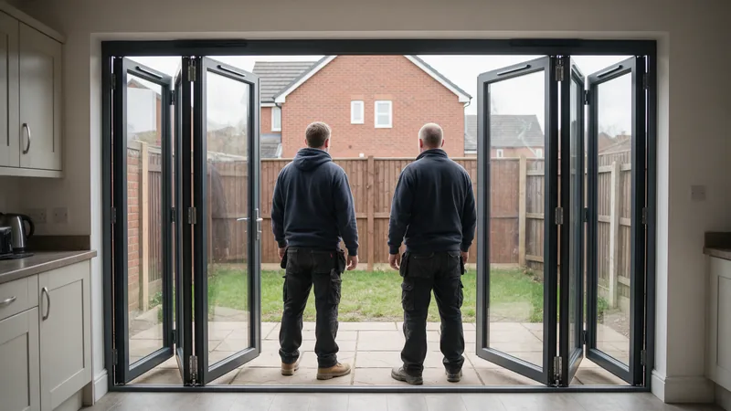
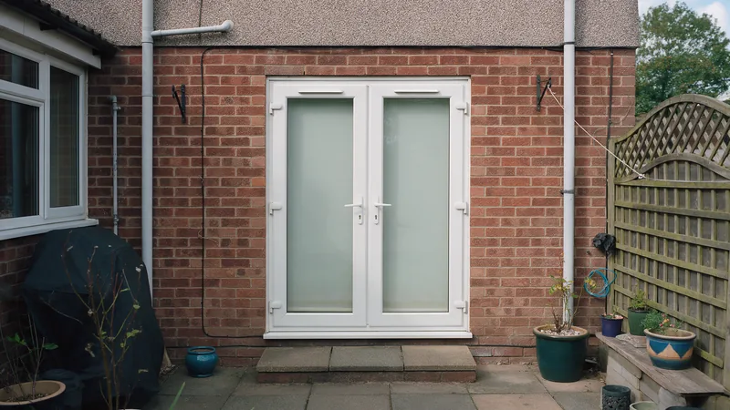

Three different answers
Bifolds fold and stack to one side, so you get nearly the whole opening open. Sliders run on a track and one leaf passes the other, so half the opening opens and nothing swings anywhere. French doors are a pair that open out like big windows, and they suit narrower openings where a slider would give you a mean gap.
The honest version is that bifolds are the ones people want and sliders are the ones more houses need. A bifold stack takes up a chunk of wall, and on a small room it eats the wall where the sofa goes. A slider gives up some opening width and gives you back a clean line of glass all year, which is what you are looking at most of the time.
What the opening needs
Big doors are heavy, so the structure matters. The lintel over the opening has to carry it, the floor under the threshold has to be solid and level, and the threshold detail decides whether rain finds its way in. If you want a flush threshold so there is no step, the drainage under it has to be right, and that is a decision made before anything is ordered, not after.
Aluminium gives the slimmest frames, which is why most bifolds and the bigger sliders use it. uPVC is fine on a smaller opening and costs less to run up. We will tell you which the opening actually suits rather than which has the better brochure.
Living with them
Bifolds have more moving parts, so they want the tracks keeping clear and the rollers adjusting now and then. Sliders need the bottom track brushing out, especially in autumn. Neither is difficult, and both are a lot happier if the person who fitted them set them level in the first place.

Generated photoGenerated for this demo. Not a photograph of a real job.
On the day
How this one usually goes.
- We look at the opening and what holds it upLintel, floor, threshold and the fall away from the house. On a new opening this is a conversation with whoever is doing the building work.
- We talk about where the doors go when they are openThe part people miss. On a bifold, the stack has to live somewhere. On a slider, one leaf sits behind the other and that half never opens.
- Choose the frame and the thresholdAluminium or uPVC, the colour inside and out, and whether you want a level threshold with the drainage that goes with it.
- Fitting dayOld doors out, frame in, levelled and packed properly, leaves hung and adjusted, tracks set, and the whole thing opened and closed until it runs sweetly.
- Shown how they workHow to lock them, how to clean the track, and how to adjust a roller when a leaf starts catching in a few years.
A sample running order for this demo. Yours depends on the house.
Questions
Asked about this job.
Bifold or sliding patio, which should I get?
Bifolds if you genuinely want the whole wall open in summer and you have wall for the stack. Sliders if you want a clean view, a smaller room to stay usable and less to go wrong. There is a longer article under Advice that goes through it properly.
Can I have a level threshold?
Usually, and it has to be planned. A flush threshold needs drainage under it so water has somewhere to go, which is easier on a new opening than on an old one. We would rather fit a small upstand than a level threshold that leaks.
How wide can they go?
Wider than most houses need, and the limit is usually the lintel and what it is sitting on rather than the doors. Anything that changes the structure needs the building work sorting first, and that is a builder's job before it is ours.
Are bifolds draughty?
Properly fitted, no, and badly fitted, yes, more so than a slider because there are more joints. The usual cause of a draughty bifold is a frame that was not packed and levelled, so the leaves do not pull up evenly on the gaskets.
General trade knowledge written for this demo, not advice on your house.
Our work
Sample jobs like this.
 Generated photoSliding patio doorPenketh Sample
Generated photoSliding patio doorPenketh Sample
Generated photoFrench doors onto the patioLymm Sample Generated photoBay put back as it wasLymm Sample
Generated photoBay put back as it wasLymm SampleMade up samples with generated pictures. Tap one for the detail.
Also
The other things we do.
Replacement windows
Whole houses and single openings. Measured properly, made to those sizes, and fitted without taking the plaster off with them.
More →Composite and front doors
A solid door, a frame that fits the opening, and a lock that works with one hand full of shopping. Colour, glass and furniture your pick.
More →Sash window repair and replacement
Cords, weights, beads and draughts put right on the originals, or a new sash window made to the same sightlines when the timber has gone.
More →Misted glass unit replacement
Cloudy glass with the frame still sound is a new sealed unit, not a new window. Usually a short visit and the smaller job by a long way.
More →Window and door repairs
Handles, hinges, locks, gaskets and the mechanism down the edge of a door. The parts wear out long before the frame does.
More →Shall we come and measure?
Tell us what you are looking at and your postcode and we will book a survey. If the glass has gone or a door will not lock, use the urgent line instead.